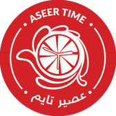
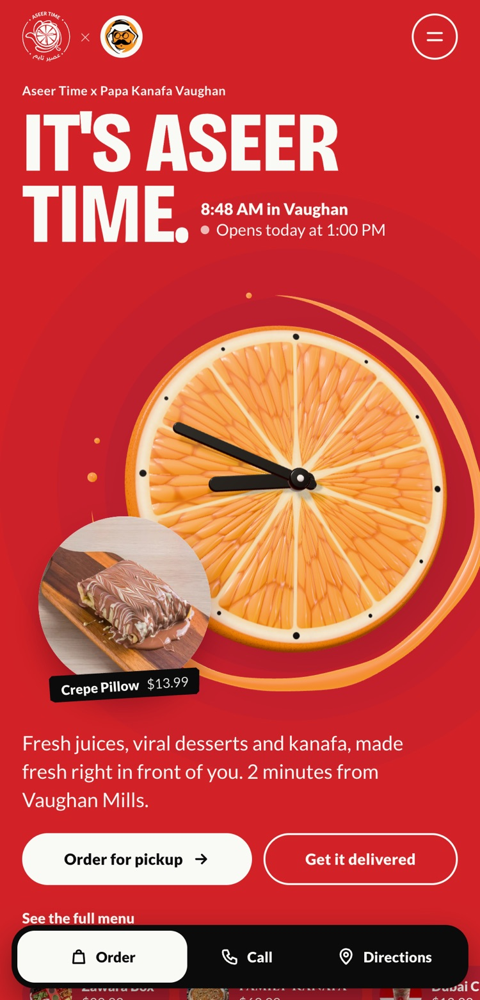
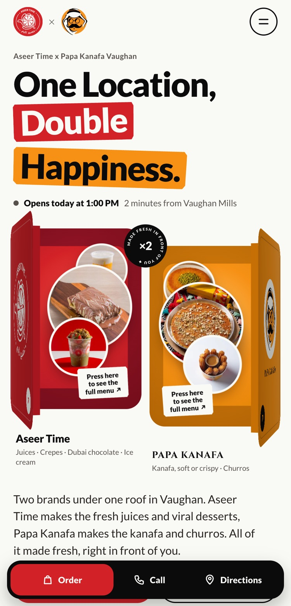

Aseer Time x Papa Kanafa VaughanWebsite preview
Two designs for your new website.
Open each one, look around, then tell us which one you like more. Both are made for phones first, so try them on yours.

Design 1
It's Aseer Time
Bold red, with a juice clock in 3D that shows if the shop is open right now.
Open design 1
Design 2
Double Happiness
Two doors, red for Aseer Time and orange for Papa Kanafa. They open in 3D.
Open design 2
- Everything in the preview works: the menu, the hours, the map and the order buttons.
- Some menu items are still waiting for their photos.
- This preview is not on Google and opens only for people who have the link. Please keep it between us for now.